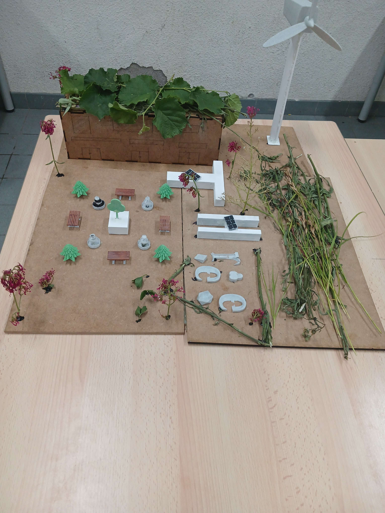
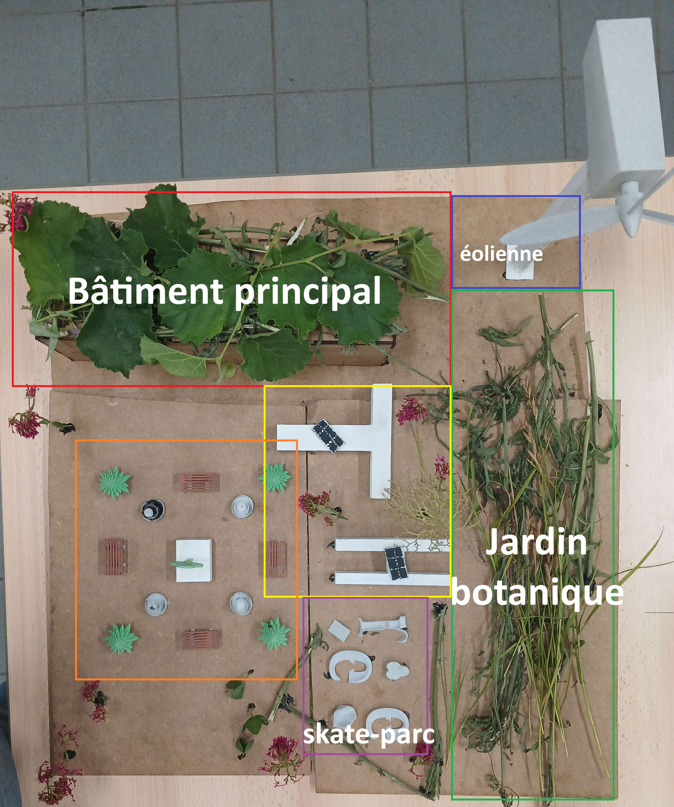

Projet du lycée: Three
Notre projet du lycée en lien avec la transition énergitique est un conception du lycée qui peut être construit au futur. Il utilise l'énergie renouvelable qui est produit sur la territoire du lycée qvec des techniques différentes
Les moyens de la production de l'électricité pour notre lycée:
- - énergie du vent: on a décidée d'instaler une éolienne à proximité du lycée pour produire la majorité de l'énergie que lycée a besoin mais il y a une problème du bruit donc on doit éloigner notre éolienne
- - énergie solaire: il y a quelques panneux solaires qui peut alimenter certaines parties du lycée comme l'éclairage des petits bâtiments
- - énergie du mouvement: notre projet utilise des plaques piezoélectriques qui son installées dans le skate-parc pour produire plus d'électricité
Pour conclure, le projet Three consiste en utilisation des énergies renouvelables et encourager des élèves à produire moins des gaz à effet de serre dans sa vie

